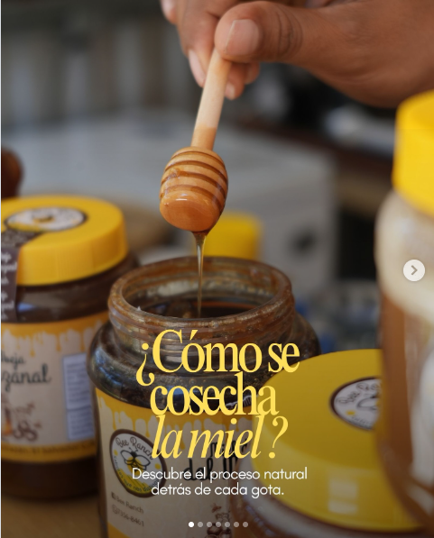
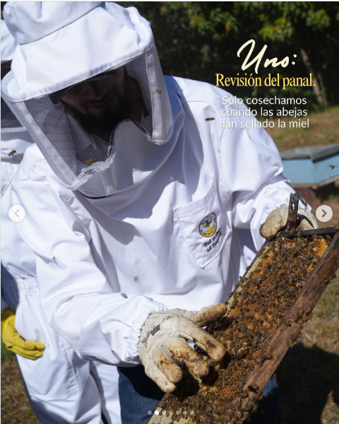
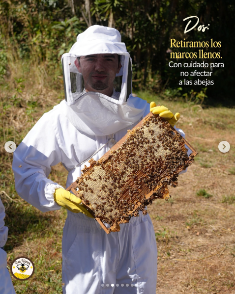
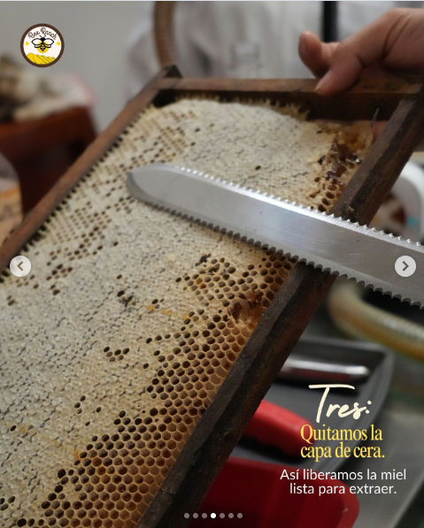
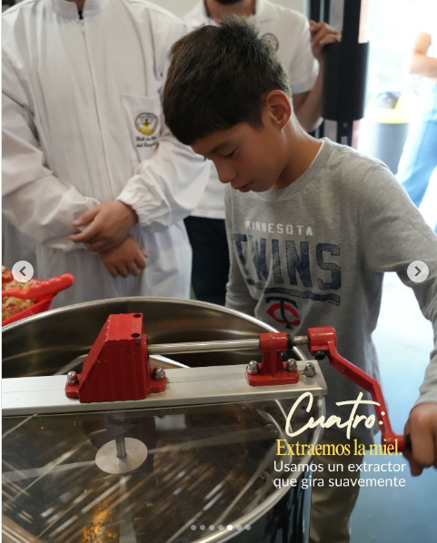
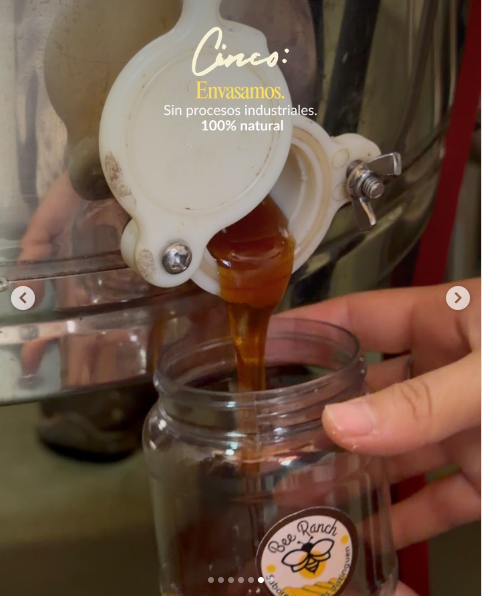
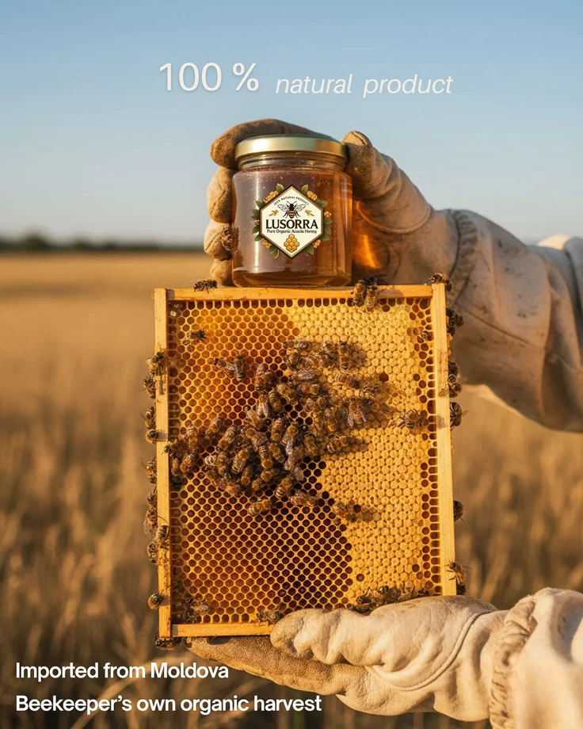
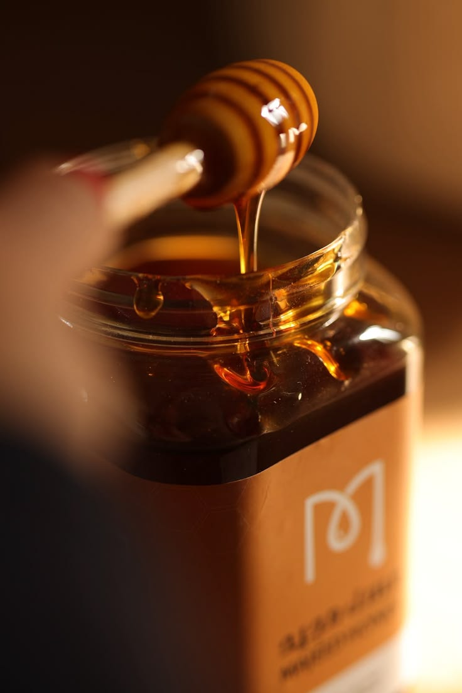
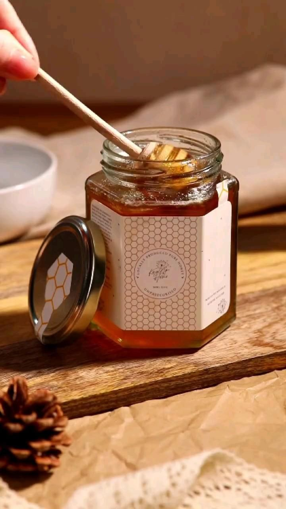
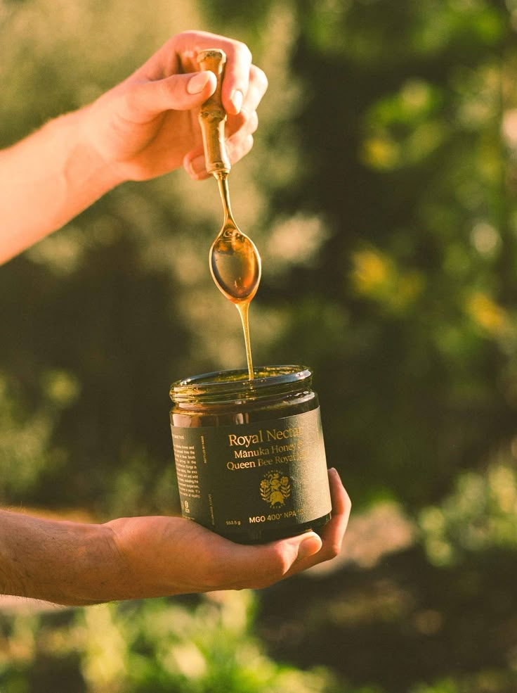

10 piezas, una narrativa
Cada mes producimos 10 contenidos distribuidos de forma estratégica. No es relleno — cada pieza tiene un objetivo distinto y todas trabajan en conjunto.
Listado de contenidos











"Somos Melissas del Norte, una familia de Copacabana, Antioquia, que lleva más de [X] años cuidando abejas en la montaña.
Lo nuestro no empezó como un negocio — empezó como una tradición. Y así se ha mantenido: con la misma paciencia, el mismo respeto por las abejas, y la misma convicción de que la miel de verdad no se fabrica, se cuida.
Producimos miel 100% pura, polen, propóleo, jalea real y cera. Y desde hace poco, dos cervezas artesanales hechas con nuestra propia miel: MILA y EMI.
Cada frasco que llega a tu mesa cuenta nuestra historia — y la de las abejas que la hicieron posible.
Encuéntranos en melissasdelnorte.com. Hacemos envíos a todo el país."
* Los conceptos exactos de cada pieza, copys finales y fechas de publicación se desarrollan en el documento operativo interno.